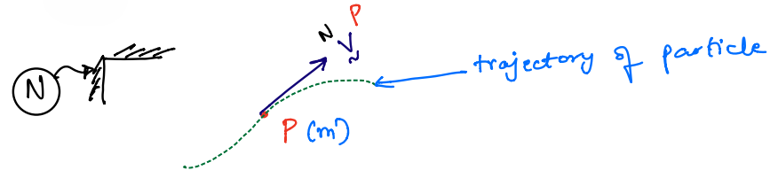
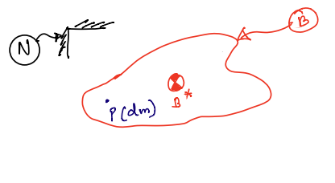
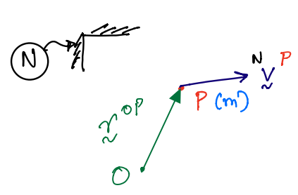
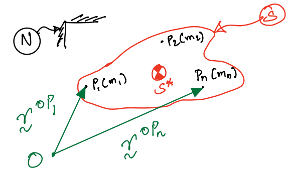
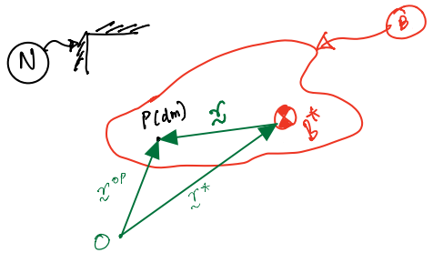
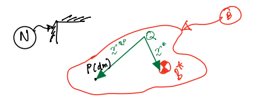
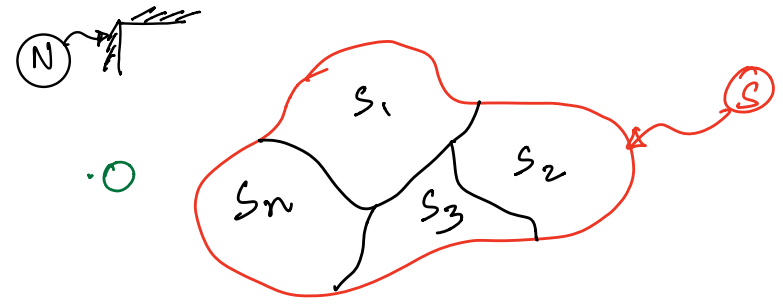

Momentum: Linear and Angular#
Introduction#
This chapter explores the concepts of linear and angular velocities for both particles and rigid bodies. These fundamental principles:
Merge the conecpts covered up until this point.
Underpin Newton’s second law of motion, which is key to deriving equations that describe the motion of engineering systems using the particle and rigid body approximations.
Linear Momentum#
Linear momentum is a vector quantity defined as the product of an object’s mass and velocity. The letter \(\mathbf{L}\) is used to represent this quantity - typed in boldface to represent it as a vector.
Particles#
The linear momentum of a single particle (a point with mass) is defined as the product of its mass and velocity. Since the velocity of a particle is defined relative to a specific reference frame, the linear momentum is also defined relative to that frame.
Notation#
The linear momentum of a particle, \(P\), in frame \(N\) can be displayed as shown below: $\( {}^{N}\mathbf{L}^{P} \)$
The mathematical definition of this is: $\( {}^{N}\mathbf{L}^{P} = m \, {}^{N}\mathbf{v}^{P} \)$
Where:
\(m\) is the mass of the particle.
\({}^{N}\mathbf{v}^{P}\) is the velocity vector of the particle.
This is visualised in the figure below, showing the particle \(m\), its velocity \({}^{N}\mathbf{v}^{P}\), its trajectory, and the reference frame \(N\).

Systems of Particles#
The next step up from a single particle is a group of numerous particles that interact with one another - commonly referred to as a system.
The linear momentum for a system of \(n\) particles is the sum of the linear momenta of the individual particles.
Notation#
The linear momentum of system of particles \(S\) in frame \(N\) is given by:
The mathematical definition of this is:
This is visualised in the figure below, showing the system, \(S\), as a collection of particles each with individual masses as well as the reference frame, \(N\).
By virtue of mass centre definition, this reduces to a much simpler equation.
Where:
\(m\) is the mass of the system given by \(\sum_{i} m_{i}\).
\(\mathbf{v}^{S^{*}}\) is the velocity of the system’s mass centre \(S^{*}\).
This is visualised in the figure below, showing the system from before, \(S\), with an added mass centre, \(S^{*}\).

Rigid bodies#
The linear momentum of a rigid body (or, more generally, a continuum) is similar to that of a system of particles; except we make use of the integral in its definition. This is due to the continuous nature of the mass throughout the body as opposed to the concentrated mass points in the system shown previously.
The linear momentum of a rigid body \(B\) in frame \(N\) is given by:
The mathematical definition of this is:
Where:
\(m\) is the mass of the body.
\({}^{N}\mathbf{v}^{B^{*}}\) is the velocity of the body’s mass centre \(B^{*}\)
This is visualised in the figure below, showing the rigid body, \(B\), with a mass centre, \(B^{*}\) as well as the reference frame, \(N\).

Angular Momentum#
Angular momentum is also a vector quantity. It is quite generally defined as the moment of the linear momentum vector. The letter \(\mathbf{H}\) is used to represent this quantity - typed in boldface to represent it as a vector.
Particles#
The angular momentum of the particle \(P\) with respect to the point \(O\) in frame \(N\) is given by:
It is quite simply the moment of about \(O\) of the linear momentum of \(P\) in \(N\).
The mathematical definition of this is:
This is visualised in the figure below, showing the position vector \(\mathbf{r}^{OP}\) from point \(O\) to particle \(P\) as well as the velocity vector of the particle \({}^{N}\mathbf{v}^{P}\). This is all in reference to the reference frame \(N\).

Hint
The moment of a bound vector is defined relative to a certain point. In this case, we are taking moment of the linear momentum of \(P\) defined in frame \(N\) (a bound vector) relative to the point \(O\).
Systems of Particles#
The angular momentum of a system of particles is quite simply the sum of the angular momentum vectors of each particle in the system.
The angular momentum of a system \(s\) of \(n\) particles defiend around the a point \(O\) is given by:
The mathematical definition of this is:
This is visualised in the figure below, showing that for a system of particles \(S\) with \(n\) particles, the system’s angular momentum can be defined about the point \(O\) inside of a reference frame \(N\).

Rigid bodies#
We can derive the angular momentum of a rigid body (or, more generally, a continuum) relative to \(O\) in a similar fashion. This is done using \(P\), a generic point of \(B\) with an elementary mass \(dm\).
The angular momentum of a rigid body is given by:
The mathmatical definition of this is:

Attention
Evaluating this integral can be quite challenging, so is there a simpler way to express the angular momentum of a body? Fortunately, yes! Let’s explore how we can achieve this\(\ldots\)
First, we make use of the two-point theorem to rewrite the velocity of \(P\) in terms of the mass centre of the rigid body. This is complted in two steps, resulting in equation \(10.1\).
So, we can now see that the angular momentum is the vector sum of two integrals. We will now examine the implication of each of these terms.
We start with the first term which is given by:
This term can be dealt with as follows:
Now, we can quite easily observe that this cross product is, in fact, the angular momentum of the mass centre \(B^*\) about the point \(O\) in the frame \(N\). In other words,
Next we can examine the second term, given by:
Attention
Prior to dealing with this term, note:
Therefore,
Since \(\int_m{\vec{r}dm} = 0\), the first term can be set to zero.
By definition of a mass centre:
Now, if we examine the above cross product on the right-hand side and compare it to the definition of angular momentum of a rigid body, we can see that this is the angular momentum of the body \(B\) about the mass centre \(B^{*}\). In other words:
\({}^{N}\mathbf{H}^{B/B^*}\) is frequently called the central angular momentum; central refers to the calculation of angular momentum about the mass centre. Further, the central angular momentum is easily calculated by the following formula:
Where:
\([I]^{B/B^*}\) is the inertia matrix of \(B\) about \(B^*\); it is also called the central inertia matrix.
\({}^{N}\mathbf{\omega}^{B}\) is the angular velocity of \(B\) in \(N\).
This says that the central angular momentum is given by the product of the inertia matrix of \(B\) about \(B^*\) and the angular velocity of \(B\) in \(N\); this proof is not shown here. In summary, we can see that this second integral eventually yields:
Attention
Indeed, one must be careful in ensuring that the the inertia matrix and the angular velocity were expressed in the same reference frames BEFORE taking the product.
Finally, we now return to Equation \(10.1\) to write it in its most concise form as:
Equation \(10.4\) is called the transfer theorem for angular momentum. This is because it allows us to calculate the angular momentum of a body about any point external to the body by transferring to its centre of mass and then to the point of interest.
Special case#
Say that we want to evaluate \(^{N}H^{B/Q}\), where \(Q\) is an arbitrary point rigidly fixed on the rigid body. \(Q\) is not an elementary particle of the body. This is given and visualised as follows:

Again, we make use of the two-point theorem to rewrite the velocity of \(P\) in terms of \(Q\). So, the expression for angular momentum above is now:
Which then becomes:
The second term in the final expression, which is the integral, simplifies to a more straightforward result. Specifically, it is the product of the inertia matrix of \(B\) about \(Q\) and the angular velocity of \(B\) in \(N\). Although the proof of this simplification is not included here, it can be derived with relative ease. Thus, the equation above can be written more concisely as follows:
Two key observations may now be made to simplify equation \(10.5\):
Observation 1: If \(Q\) is coincident with the mass centre \(B^*\), then \(\mathbf{r}^{*} = 0\). Thus:
Observation 2: If \(Q\) is not the mass centre, but is a point that is fixed in both \(B\) and \(N\), then we have the following circumstance where:
In this case, we end up with the same result as case 1:
Composite theorem for Angular Momentum#
Consider a system, \(S\), is composed of a set of many smaller subsystems i.e., \(<S_1, S_2, S_3,\ldots, S_n>\) as shown below.

The angular momentum of this system, \(S\), about an arbitrary point \(O\) is given by: